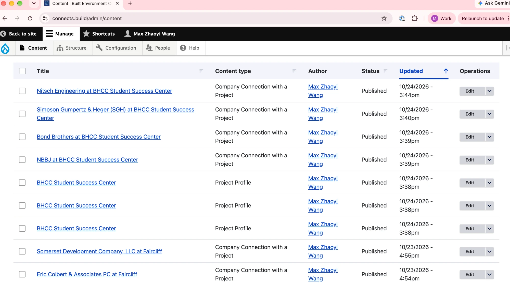
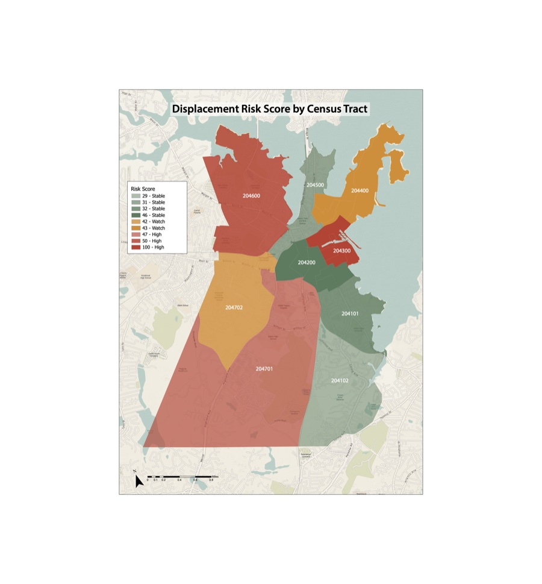
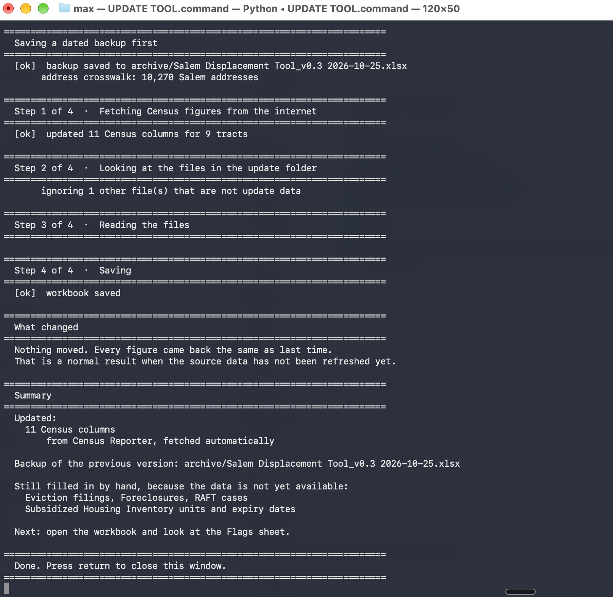

Max Zhaoyi Wang
MDes Ecologies · Harvard GSD · LEED Green Associate
The built environment is undergoing its first major technological transformation in a century. Computational design, additive fabrication, AI-driven building systems, and real-time energy infrastructure are converging — creating new asset classes, new performance benchmarks, and new roles for designers who can operate across material, data, and investment logic.
I'm drawn to this frontier: architecture manufactured by 3D printing at scale, buildings that function as active nodes in global energy grids, AI systems that self-regulate data centres and coordinate renewable networks. At Harvard GSD I study Ecologies alongside Real Estate & Sustainability, and my work spans parametric design, machine learning, interactive media, and financial modelling — built to connect environmental performance to real estate value.
Education
Master of Design (MDes)
Harvard University, Graduate School of Design — Cambridge, MA
Ecologies + Real Estate & Sustainability
Bachelor of Architecture (B.Arch), 5-year
Syracuse University, School of Architecture — Syracuse, NY
GPA 3.75 / 4.0 · Dean's List · Study Abroad: Florence & London, 2024
LEED Green Associate
U.S. Green Building Council
Interests & Vision
Computational Design
Revit · ArcGIS
Python · PyTorch
Computer Vision
Fabrication
Robotic Toolpath (KUKA)
3D Printing
TPMS Mould Design
Interactive Media
Generative Visuals
Creative Coding
P5.js · WebGL
Building Systems
Sensor Network Design
HVAC Optimisation
Building Performance
Research & Analysis
Financial Modelling · DCF
ESG Analytics
LCA · MFA
Recognition
Challenge — Semifinalist
Asian Design Award — Gold
LEED Green Associate
Work Experience
Researcher
Built Environment Plus · City of Salem, MA
Research and publish industry–academia connections on the connects.build platform, matching built environment firms to student design studios across Greater Boston. Compile spotlights, newsletters, and project profiles bridging practice and education.
Company Connections & Project Spotlights
Research net-zero and high-performance buildings across Greater Boston — sourcing photography, writing technical descriptions, and publishing firm–project profiles on connects.build. Match built environment practices to student design studios and curate a growing searchable archive bridging industry and academia.

Policy Intern
City of Salem Mayor's Office · Salem, MA
Drafted Salem's first BESS zoning ordinance under 225 CMR 29, and built a Python-automated early-warning system for residential displacement risk — a locally deployed agent that auto-fetches Census data, ingests manual city records, and outputs tract-level risk scores for housing policy review.
BESS Zoning Ordinance — Draft
Benchmarked 6 peer municipalities, synthesised the DOER model bylaw and 225 CMR 29 baseline standards, and drafted siting, setback, and fire-safety provisions for Salem's first clean energy storage ordinance.
Displacement Risk Monitoring Tool
A locally deployed Python agent and decision-support system for residential displacement risk across 9 Salem census tracts (44,795 residents). The agent auto-fetches 11 Census ACS indicators via the Census API on every run; city-access datasets — eviction filings, RAFT emergency rental cases, subsidized housing expiry dates — are staged in a local folder and ingested automatically. It normalizes, weights, and aggregates 17 measures across three domains, outputting tract-level risk scores any City staffer can regenerate without touching the formula. The Point scored 100/100, 21 points above any other tract — confirmed by City planning staff and the Mayor's policy team as matching neighborhood-level reality.
Real-World Validation
The Point (204300) scored 100 — Salem's densest renter neighborhood, with the city's highest cost burden and 86 affordable units nearing restriction expiry. It ranked 21 points above any other tract. Waterfront tracts with higher-income owner-occupancy scored 29–42. When the results were reviewed by City planning staff and the Mayor's policy team, the rankings aligned with what planners and residents already knew. The numbers matched the city.

Choropleth output — Summer 2026 scores by census tract

UPDATE TOOL.command — Python agent run · auto-fetches Census API · ingests staged files
Design Researcher
RoboticPlus.AI · Shanghai
Parametric design and robotic fabrication of the "Lotus" kinetic architecture installation — translating algorithmic surface geometry into a physical kinetic structure using Grasshopper-to-KUKA toolpath pipelines.
View project ↗Open To
Currently: Researcher, Built Environment Plus
Full-time roles beginning May 2027.
ESG materiality analysis of a US net-lease REIT · Evaluates decarbonization exposure, physical climate risk, and governance gaps within a triple-net lease structure · Solo
Proposes a three-pillar transformational strategy for a $9.5B REIT — reframing ESG from compliance to value creation through "climate district" frameworks · Team: Max Wang, Tejas Athni, Xavaar Quaranto